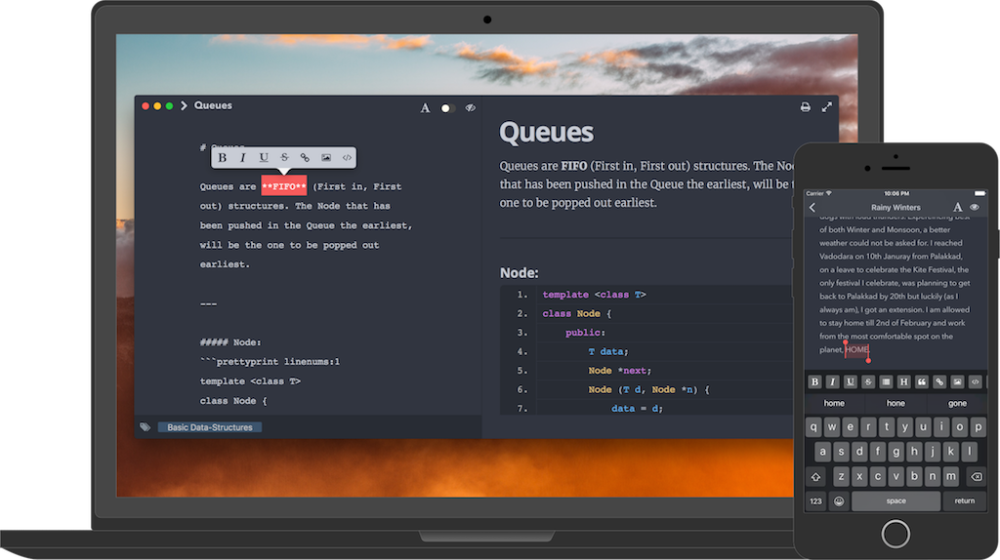
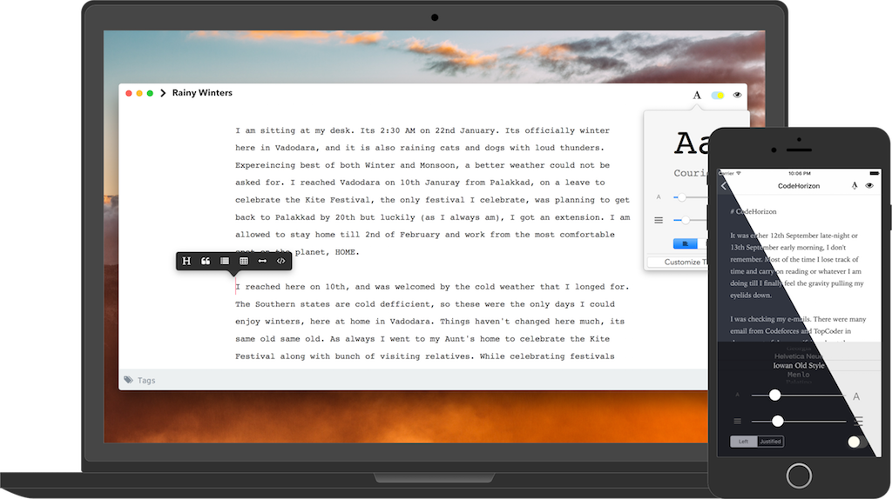

FALCON
Falcon
WRITING NOTES MADE SIMPLE!


Simple Storage
Falcon stores notes as plaintext files. Easy to import and export. Notebooks are represented as directories.
Markdown Syntax
Markdown allows you to write using an easy-to-read, easy-to-write plain text format, then convert it to HTML.
iCloud Support
Falcon for OS X & iOS support syncing notes across devices using iCloud Drive.
CREATE, UPDATE & ORGANIZE NOTES EASILY.
Write Notes in markdown, easy-to-write and easy-to-read format. Organise them by tags & notebooks. Search notes by tags, inside app & finder. Tags are not yet supported in iOS. iOS supports whole text search & title-search for notes.
PREVIEW NOTES WITH CODE-FORMATTING & IMAGES
Falcon supports adding images to your notes. Read notes in elegantly formatted previews. Previews show perfectly resized images, & supports code-blocks with line-numbers & syntax-highlighting.
PREVIEW NOTES WITH CODE-FORMATTING & IMAGES
Falcon supports adding images to your notes. Read notes in elegantly formatted previews. Previews show perfectly resized images, & supports code-blocks with line-numbers & syntax-highlighting.

LIVE PREVIEW & MARKDOWN HELPERS
With live preview you can watch markdown text render into elegant HTML pages instantly, in MacOS. Whether you are new to markdown or proficient in markdown, editor in iOS & MacOS has markdown-tag buttons to help you write & format faster.
DISTRACTION FREE WRITE AND READ MODES
Write & Read your notes in uncluttered and clean interface, to maximize your focus on the task! Also, Falcon comes with two beautiful default themes, to make your reading & writing experience better in Light & Dark environments. Themes are modifiable on MacOS.

DISTRACTION FREE WRITE AND READ MODES
Write & Read your notes in uncluttered and clean interface, to maximize your focus on the task! Also, Falcon comes with two beautiful default themes, to make your reading & writing experience better in Light & Dark environments. Themes are modifiable on MacOS.
SYNC NOTES USING ICLOUD DRIVE
Sync notes across Mac, iPhone, iPad & iPod touch using iCloud drive. Notes are saved locally as well as in iCloud Drive to prevent data loss.